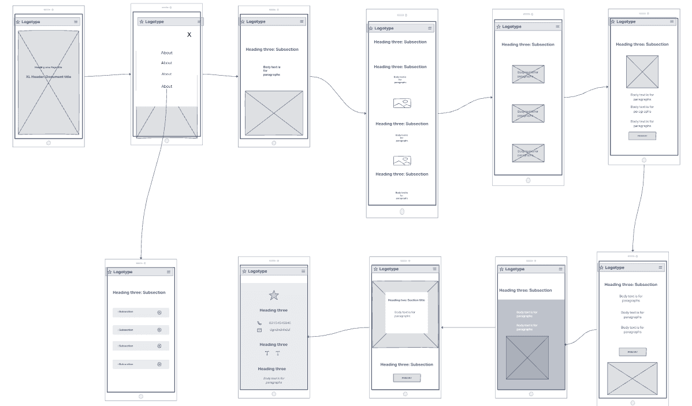

Second Phase
The second phase would be creating wireframes for the website.
Low Fidelity Wireframes
I created a low fidelity wireframes to show the owner how the potential website's layout would be.
I created a one page desktop wireframe that directs the user vertically;
- Header Section
- About Section
- Services Section
- Weekly Menu
- Meet the Chef
- Tesimonials and Footer
- Seperate page for Frequently Asked Questions

I then created a wireframe for a smaller screens (mobile) viewports. This viewport differs by having a hamburger menu navbar that extends when clicked and allows for a vertical view rather than horizontal
